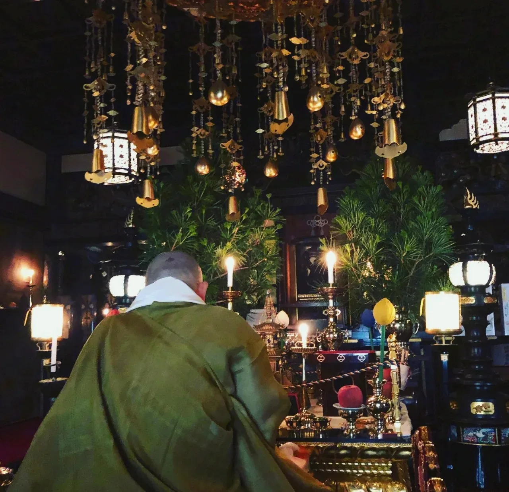
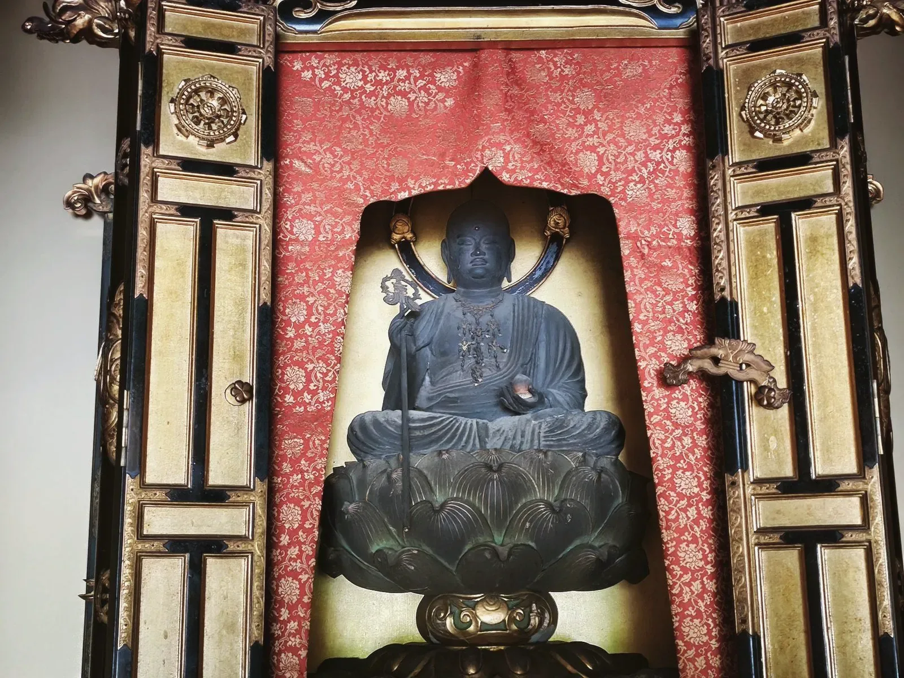
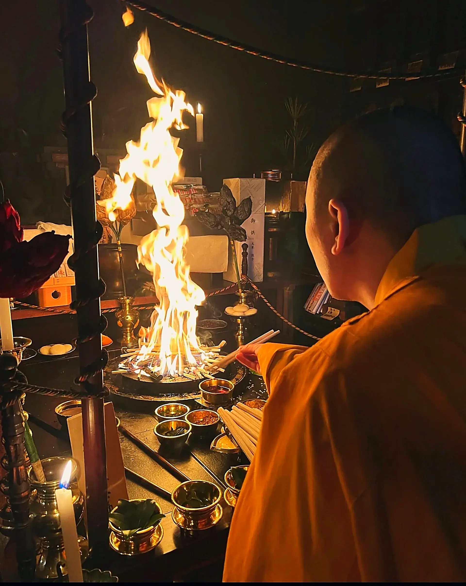
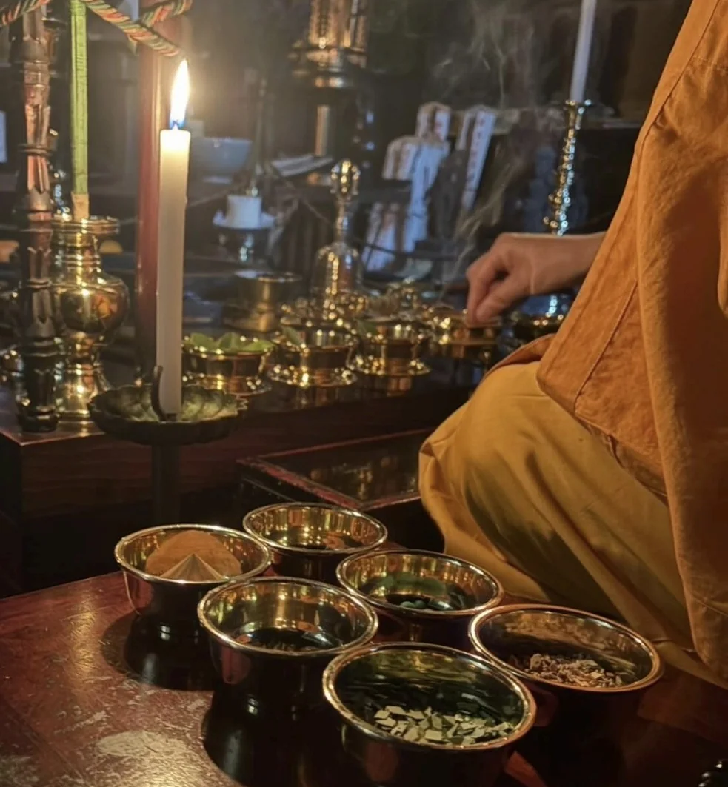
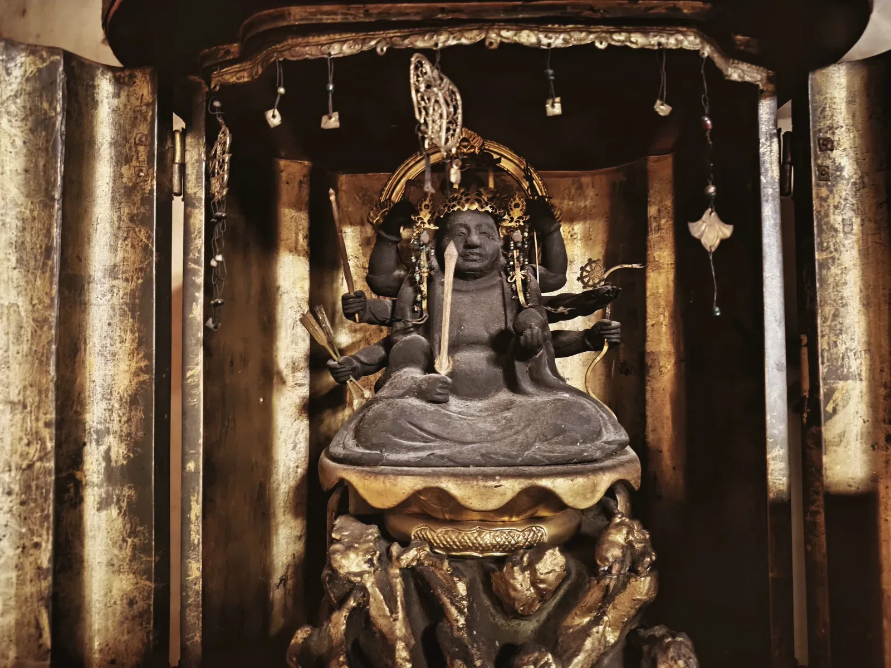
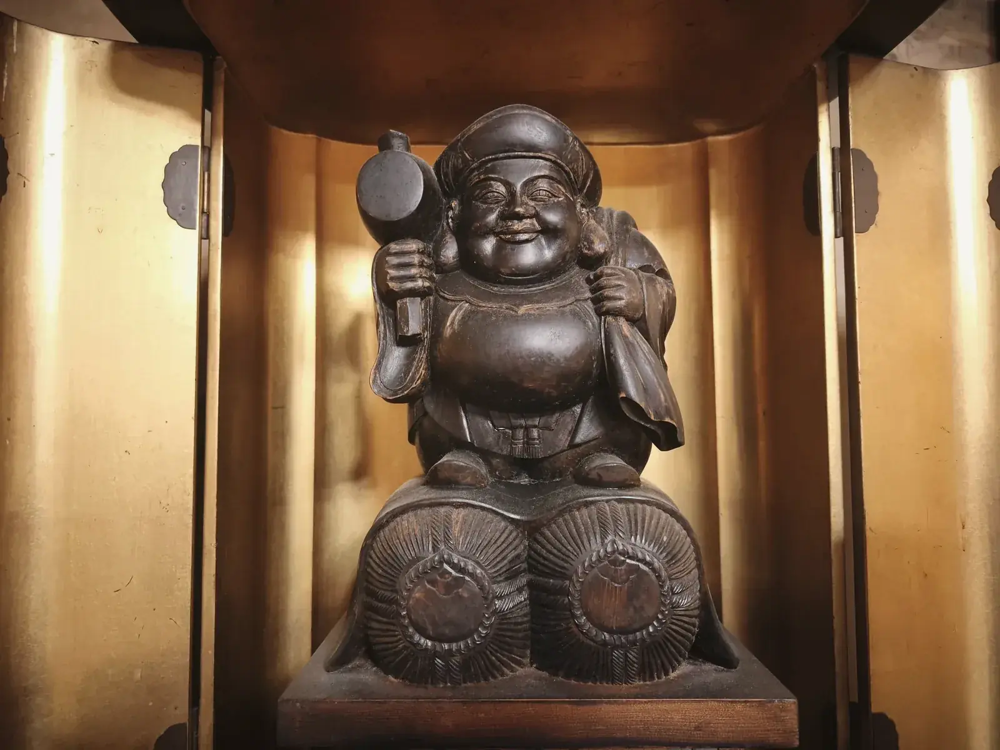
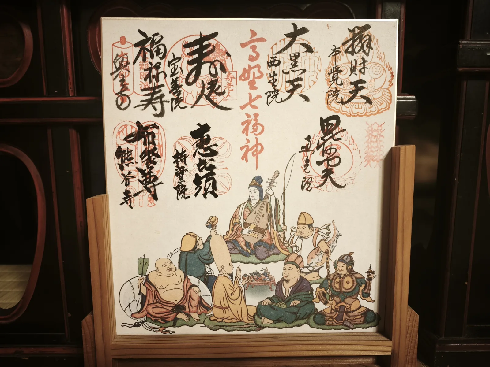
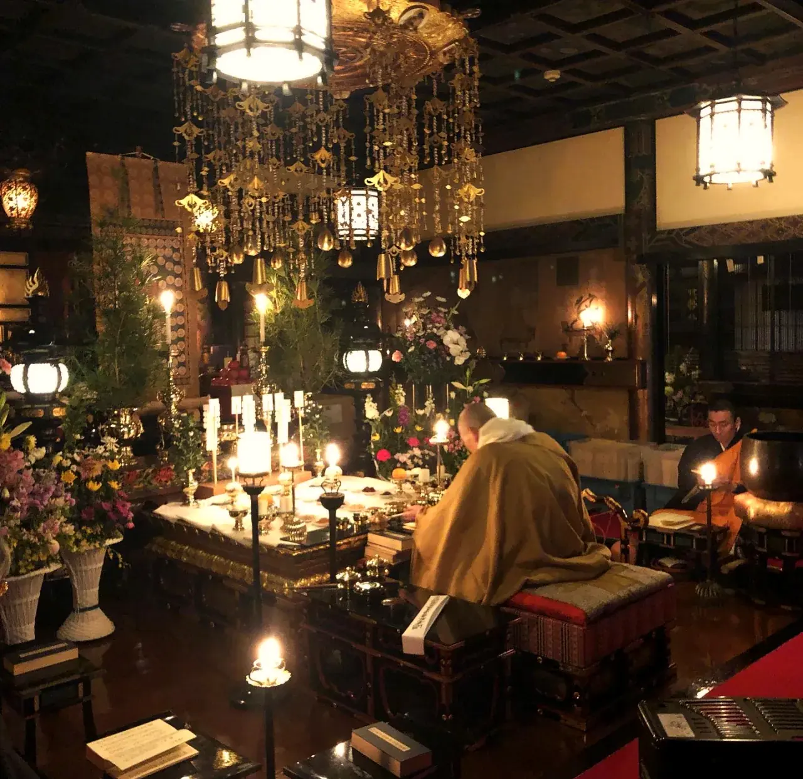
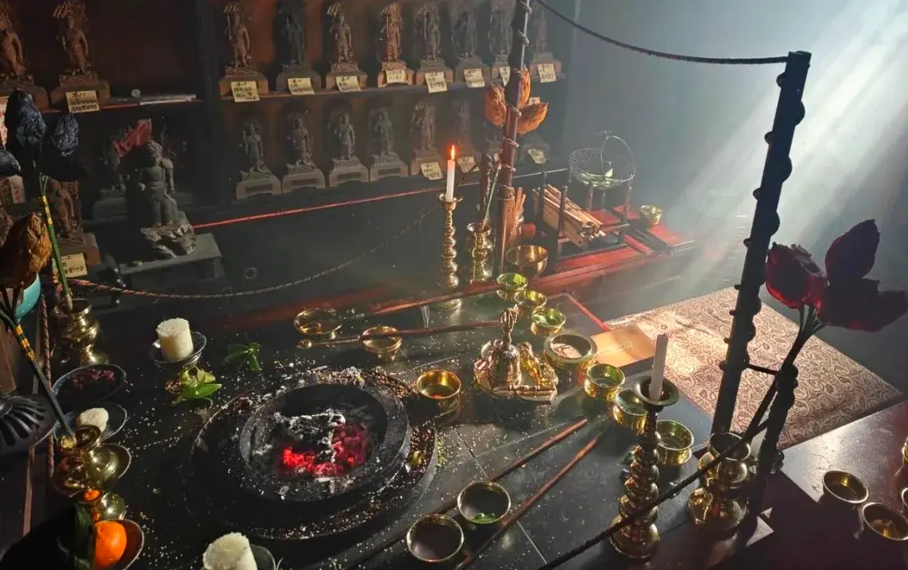

お参り・ご供養
高野山 別格本山 本覚院
供養やおまつりのことでお困りのことがございましたら、どうぞご相談ください。本覚院では、ご廻向、永代供養、納骨供養、護摩供養、ご祈祷、別供養を随時承っております。
ご供養のご相談・お申し込み0736-56-2711受付 9:00〜17:00
縁起

1190建久年間の開創
世界遺産・高野山にある本覚院は、もとは弘法大師みずから地蔵菩薩を安置された場所にあります。平安時代の建久年間（1190年）、歌人・待宵小侍従の願いによって高野山に登った行空上人が開いたとされています。
待宵小侍従以来、文人とのかかわりも深く、江戸時代初期には狩野派の巨匠・狩野探幽が滞在し、名画を残しています。
縁起をくわしく読む
後鳥羽院の建久年間（1190年）、行空上人は待宵小侍従の請いによって高野山に登りました。そこは弘仁年中、弘法大師が自ら六地蔵菩薩を彫刻して安置された場所、すなわち今の本覚院の境内です。
上人がここに宿して読経されると、地蔵菩薩が現れ、尊像が光を放って「汝、此処に住せよ」と告げられたといいます。行空上人は感喜して講坊十二院を建立し、常に法華経を講じられたことから「講坊」と称されました。
東山天皇の元禄年間、この講坊を小侍従の戒名にちなんで「本覚院」と改め、今日に至っております。
ご本尊は智証大師御作の不動明王。古来より伏見宮家の御菩提所であり、また源頼朝公の御子息・大友一法師丸以来十九代、尾張徳川、臼杵稲葉、大洲加藤、岸和田岡部などの諸侯をはじめ、一般の信徒の方々の篤い帰依を受けてまいりました。
- 弘法大師御作 愛染明王
- 唐の恵果阿闍梨御自画像重要文化財
- そのほか、著名な宝物を多数保存しております
ご廻向

本覚院のご廻向は、高野山の金剛峯寺で行われる法要と同様の流れで、およそ1時間かけておつとめいたします。僧侶が朗々と音階のついたお経（聲明）をおとなえする姿や声は、ご先祖さまだけでなく、参列される方の心も清々しく癒してくれることでしょう。
- 前讃お経の種類のひとつ。ご廻向はここからはじまります。
- 各種のお経僧侶が音階のついたお経（聲明）をおとなえします。
- 後讃お経の種類のひとつ。法要を締めくくります。
- ご法楽般若心経とご真言を、参列の皆さまもご一緒にお唱えいただきます。
ご先祖さまのために、お霊供膳を御位牌や法名を記した証文の前にお供えしております。
お参りが終わりましたら、お施主さまに次のものをお渡しいたします。
- おしるしの証文
- 領標
- 御供物
永代供養
お墓をみてくれる後継者がいない。
分家なので、お仏壇がない。

このようなお悩みが、お寺にはたくさん寄せられます。当院では、住職をはじめ僧侶が親身にご相談をうかがい、それぞれのご家庭に沿った永代供養の方法をご案内しております。
お位牌を建立し、本堂にて勤行したのち、位牌堂にて永代におまつりいたします。永代供養をされた方には、皆さまご安心いただいております。ご不安なことや詳しいことは、お電話でお問い合わせください。
毎朝のおつとめ
- 飯お仏飯を
お供え - 茶お茶を
お供え - 燈お燈明を
あげる - 拝お参り
する
ご祈祷・護摩

護摩堂では、御護摩による祈祷を随時承っております。護摩祈祷により、さまざまな願いをご祈願いただけます。
- 無病息災
- 心願成就
- 交通安全
お不動さまは、憤怒の厳しいお顔の奥に、深い慈悲をたたえておられます。私たちの煩悩や迷いを焼きつくし、お守りくださる仏さまです。

高野七福神
高野山内の寺院には、七福神がお祀りされています。本覚院は「高野七福神めぐり」の札所のひとつで、弁財天と大黒天のお二方をお祀りしています。



七福神めぐりの御朱印
高野七福神は、山内の4つの寺院にお祀りされています。半日ほどで歩いてめぐることができ、専用の色紙に七つの御朱印をいただくと、七福神の絵とともに一枚がそろいます。
御朱印・色紙については、お気軽にお尋ねください。

願いを託す「だっこ地蔵さん」
心迷うとき、お抱え地蔵さまに
そっとお尋ねしてみませんか。
本覚院には、古くから伝わるお地蔵さまがいらっしゃいます。正式には「お抱え（おかかえ）地蔵さま」、信者の皆さまからは「だっこ地蔵さん」と呼ばれ、親しまれてきました。
まずは何も考えずに、座布団ごとお地蔵さまを抱え上げます。次に手を合わせ、心の中でお願いごとをしてから、もう一度抱え上げます。最初より軽く感じられたら、その願いは叶うと伝えられています。
抱えてもよし、お身体の不安なところをなでてもよし、とされています。
年中行事
2/3節分
星まつり
生命あるすべての者の災厄をしりぞけ、幸福を祈る祈祷祭です。護摩祈祷により、無病息災・心願成就・交通安全などをご祈願いただけます。

星まつりの法要（本堂） 
星供護摩祈祷（護摩堂） 8/11から
お盆
高野山では8月11日からお盆参りが始まります。住職以下僧侶全員が正装し、迎え提灯をさげて、奥の院にある本覚院管理のお墓を一つひとつお参りいたします。千、万を越える経木塔婆に一枚一枚戒名を手書きし、ご供養いたします。お盆の間は毎日30分から1時間ごとに、お水・お茶・お仏飯・みずのこ・お霊供膳をお供えいたします。
よくあるご質問
ご廻向はどのくらい時間がかかりますか？
およそ1時間です。前讃からはじまり、各種のお経、後讃、最後にご法楽として般若心経・ご真言を参列の皆さまとご一緒にお唱えいただく流れです。
永代供養の相談はどうすればいいですか？
お電話でご相談ください。住職はじめ僧侶が親身にお話をうかがい、それぞれのご家庭に沿った永代供養の方法をご案内いたします。
ご廻向では参列者もお経を唱えますか？
最後のご法楽で、般若心経とご真言を参列の皆さまとご一緒にお唱えいただきます。

ご供養のご相談
ご廻向・永代供養・ご祈祷などは、お電話でお気軽にご相談ください。
住職をはじめ僧侶が、親身にお話をうかがいます。
ご宿泊のご予約は予約サイトから